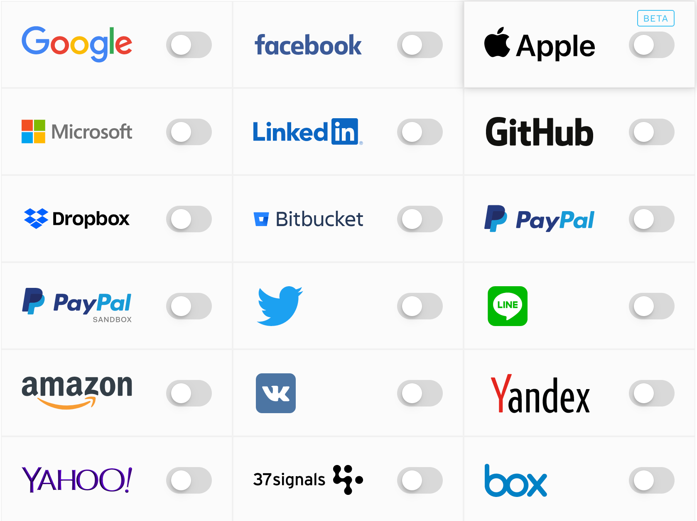
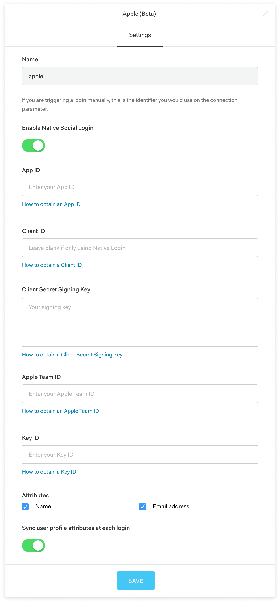
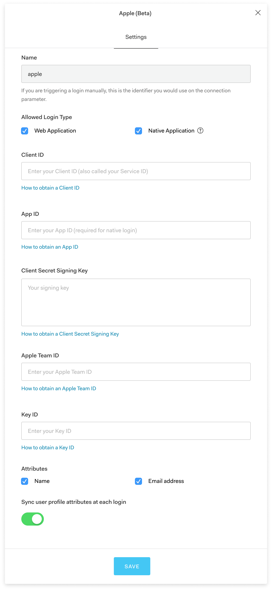
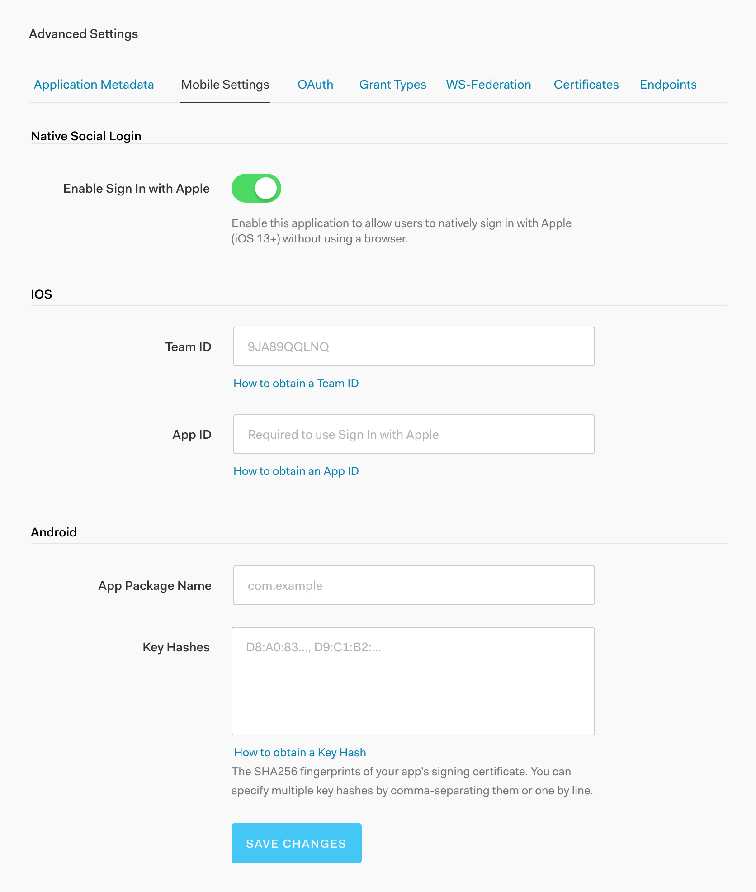

Sign In with Apple Native Social Login Implementation
Overview
In the summer of 2019 Apple announced their entry into the identity provider field at WWDC. Their new Sign In with Apple feature would be similar to other identity providers (Sign in with Google, Sign in with Facebook, etc.) with two key differences. First, Apple would require that any app in the app store that provides support for third party identity providers must also support Sign In with Apple. Second, they would be the first identity provider to support a completely native login flow for native applications. As an identity and access management company, one of Auth0’s key features is allowing customers to connect different identity providers to their applications. Supporting Sign In with Apple as quickly as possible became a high priority, as many of our customers would be depending on this feature.
Technical Background
Traditionally, identity providers in native applications have had to redirect users to the web in order to authenticate before redirecting them back to the application. With Apple’s new native login, deploying as part of iOS 13, users will be able to natively authenticate within an application on iOS, watchOS, or tvOS.
Supporting a New Type of Login
Because all of the other identity providers supported by Auth0 use the traditional web authentication, we needed to update our administrative dashboard to allow users to configure native authentication as well. And while Apple is the first to implement a native social login flow other identity providers are already working on developing their own native social login options, so it was imperative that whatever solution we came up with be flexible enough to accommodate them in the future.
Project Kick Off
As the product designer on this project I was responsible for determining how the configuration settings for Apple’s native social login would be displayed in the administrative dashboard.
I began by meeting with the engineers developing the feature, as well as our product manager, in order to understand how the feature would be implemented and what the technical constraints were. We discussed a couple of different options for where to put the settings for native social login, including our Connections panel, where users can configure their identity provider settings, and the Applications panel, where users configure settings specific to an individual application. We agreed that the Connections panel made the most sense, since that’s where users were used to going to configure the settings for their chosen identity providers.

Connections Panel
Design
Challenging Assumptions
After my conversation with the engineers and product manager I began brainstorming possible configuration options. Since all of our connection settings were configured based on the existing paradigm of authentication taking place through the web (redirecting to the web in the case of native applications) their suggestion had been to add a toggle switch to allow users to opt in to using native social login.

Connections Settings with Native Social Toggle
However, with Apple pushing so hard on native social login and other identity providers poised to follow suit, I questioned whether treating web login as the default was the right approach. If our customers were creating native applications, it was entirely possible that they might only be interested in using native social login, or would at least consider it the primary approach, rather than a secondary option. I created a second prototype that required users to explicitly opt in to either web login, native social login, or both.

Connections Settings with Web and Native Options
I presented both options to our stakeholders, which included the entire engineering team from the product domain, product managers, technical writers, and Auth0’s principal architect. While most of the feedback I got suggested that we should continue to present the web login as the default and native as secondary, some of the engineers did start to question whether the tide might be shifting.
Lightweight User Testing
In order to validate our assumptions I conducted some lightweight user testing with one of our early access customers. Using Google Docs I included links to both prototypes and asked whether the UI was clear and what their expectations for the UI were.
While the amount of feedback we received was limited, their responses indicated that when creating a native application they expect the web login flow to be secondary and they didn't understand why native social login was being treated as an addon.
Rolling with the Punches
Just as I was preparing to start iterating on the prototype based on that feedback, another early access customer alerted us to a potential problem. They were planning to use the native Sign In with Apple flow to authenticated both the iOS and watchOS versions of their app and discovered that each version would require a separate App ID from Apple.
After a bit more discovery into this issue, we realized it was likely to be a common use case, and something we needed to account for. Since a unique App ID is required for every application using native social login, but multiple applications can use the same Connections settings it no longer made sense to include the settings for native social login in the Connections panel.
I met with the engineers and product manager again to discuss our options and we decided that since our Applications panel allowed users to configure settings for a specific application it made the most sense to include the native social login settings within the mobile settings section of the Applications panel.
I added a new section to the mobile settings for native social login, allowing users to opt in or out of using Sign In with Apple. This option also provides the flexibility of enabling other forms of native social login as other identity providers jump on the bandwagon.

Applications Settings
Handoff and Implementation
Because updating the configuration settings for native social login consisted of adding a toggle switch and supporting text, and those elements are already established within Auth0’s design system, a mockup of the settings page with the correct wording was the only deliverable needed. The option to enable native social login is currently available to early access customers, and will be released to general availability when iOS 13 is released.
Next Steps
As the native social login flow gets adopted by more customers we will continue to test the configuration settings with our customers and intend to continue iterating on our implementation. Since native social login represents a significant change in how identity providers work, and given that other identity providers are likely to start exploring this arena, we expect this to be a part of our product that will continue to grow and expand, requiring future explorations.